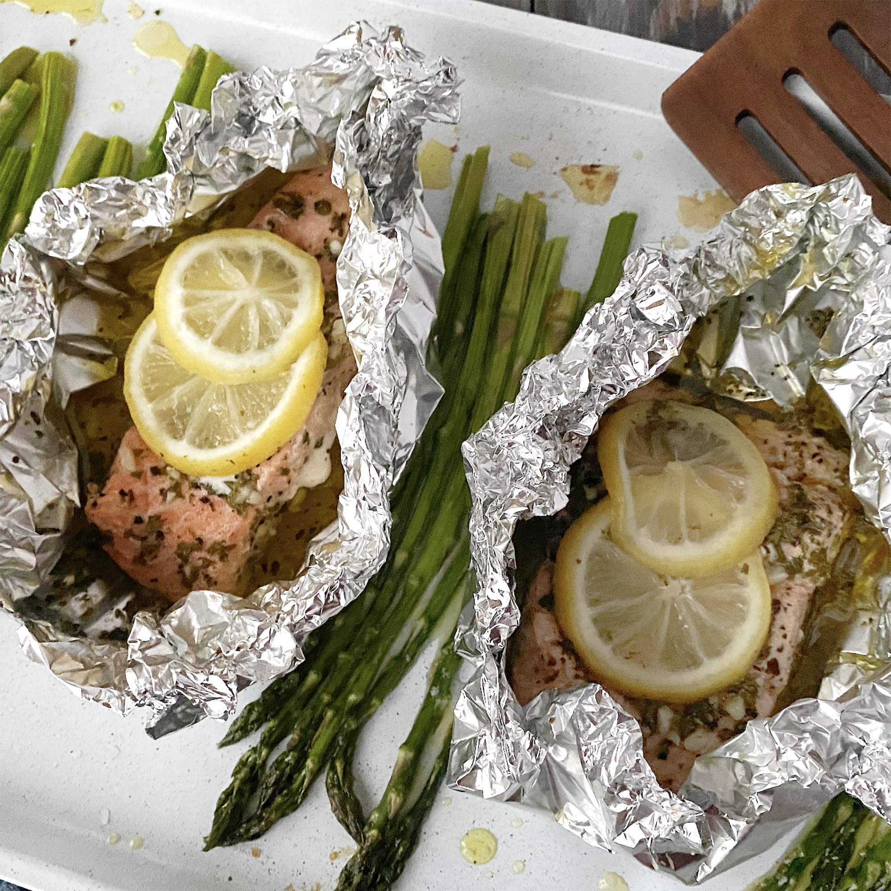

Baked Salmon

Description
A simple recipe for oven baked salmon with a delicious garlic and lemon marinade.
Ingredients
- 1 pound salmon
- 3 cloves minced garlic
- 2 tablespoons olive oil
- 1 tablespoon lemon juice
- 1 teaspoon dried parsley
- 1 teaspoon dried basil
- 1/2 teaspoon salt
- 1/2 teaspoon ground pepper
Steps
- Mix olive oil, garlic, lemon juice, parsley, basil, salt and pepper in a bowl
- Marinate salmon with mixture in a container in fridge for at least 1 hour
- Preheat oven to 400 degrees F
- Place salmon on aluminum foil on a pan, spoon marinade on top, and bake for 20 minutes